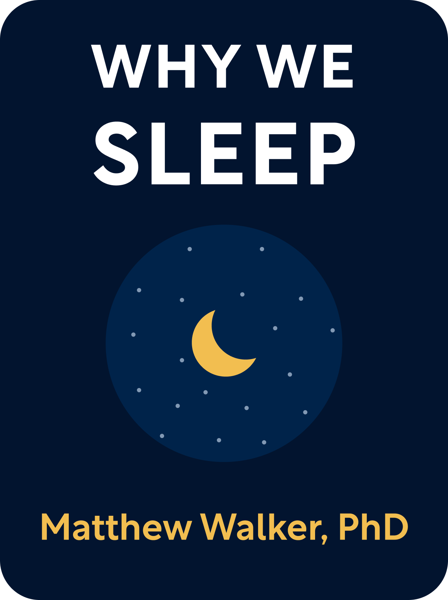
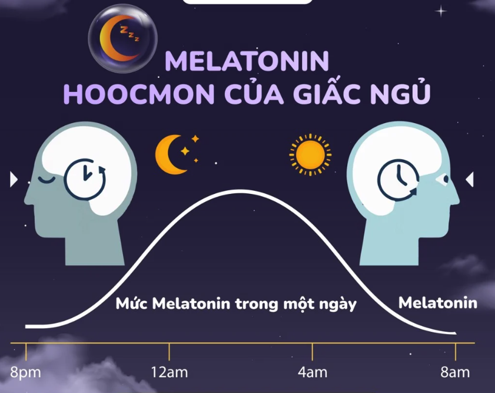
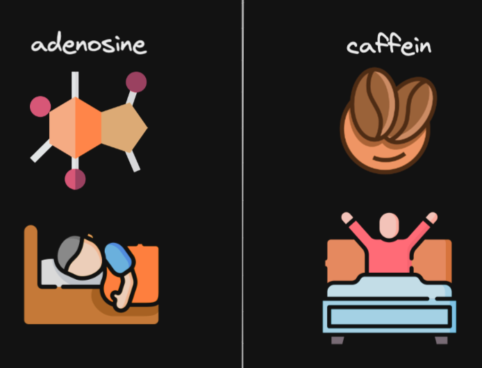
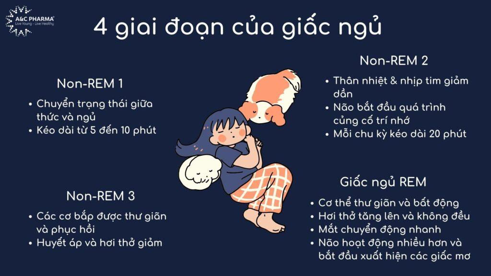

Giấc ngủ là nhu cầu sống không thể thiếu đối với hầu hết các loài sinh vật tồn tại trên Trái Đất, trong đó đương nhiên có loài Người chúng ta. Thế nhưng mình thấy hiện nay mọi người thường xem nhẹ tầm quan trọng của giấc ngủ. Như mình trước cuối tuần là cũng hay cố thức để cày phim hay chơi game cùng bạn bè lắm 😝
😴 Giấc ngủ quan trọng như thế nào?
Theo học thuyết Darwin :
Những cá thể có những đặc điểm di truyền thích nghi với môi trường thì khả năng sống sót sẽ cao hơn.
Trải qua hàng triệu năm tiến hoá, loài Người hay chính xác hơn là bộ Gene của chúng ta đã định hình lên những phản xạ không điều kiện để thích nghi và tồn tại trên Trái Đất. Ví dụ như:
- Nhìn một sự vật, sự việc nào đó sẽ ngay lập tức đánh giá xem nó có thể gây nguy hiểm cho mình hay không(trong thời tiền sử, việc nhận biết sớm các nguy cơ tiềm tàng giúp chúng ta có nhiều khả năng sinh tồn hơn).
- Khi gặp tình trạng nguy hiểm, bộ não tự động tiết ra adrenaline để ra quyết định nhanh hơn, làm tăng nhịp tim, cung cấp năng lượng cho cơ thể.
Thế nhưng mọi người đã bao giờ tự hỏi, tại sao tổ tiên của chúng ta lại để bản thân rơi vào trạng thái bất tỉnh suốt nhiều giờ đồng hồ 💤 bất kể cho môi trường xung quanh đang tồn tại những nguy hiểm đang trực chờ(thú dữ, thời tiết xấu, …) hay không?
Đúng vậy, tầm quan trọng của giấc ngủ là không cần phải bàn cãi!
Có 3 yếu tố chính ảnh hướng đến sức khoẻ của chúng ta, đó là:
- Giấc ngủ
- Chế độ ăn uống
- Tập thể dục
Nhưng theo tác giả, và mình cũng đồng ý rằng: “giấc ngủ là yếu tố quan trọng nhất, vì chỉ khi có một giấc ngủ tốt thì hai yếu tố còn lại mới đạt được hiệu quả cao”.
Tại sao chúng ta lại buồn ngủ?

Melatonin là một loại hormone tồn tại trong cơ thể được tiết ra bởi tuyến tùng. Vai trò chính của hormone này là điều chỉnh giấc ngủ và nhịp sinh học của cơ thể.
Tác giả có giới thiệu thêm về nhân trên chéo, có thể hiểu là đồng hồ sinh học riêng của mỗi người. Khi nhân trên chéo cho rằng sắp đêm rồi, nó sẽ ra phát tín hiệu là “tuyến tùng - mày tiết ra melatonin đi để còn chuẩn bị đi ngủ”.
FYI
Theo nghiên cứu, nhân trên chéo có thể điều chỉnh tối đa là một giờ cho đồng hồ sinh học. Có nghĩa là nếu bạn bay sang một nước lệch 5 giờ, bạn sẽ cần tối thiểu năm ngày để thích nghi với nhịp sống mới.
Quay trở lại với Melatonin, tác giả ví hormone này như một tín hiệu của một cuộc đua, báo hiệu cho bộ não hãy chạy về đích(giấc ngủ). Điều này có nghĩa là melatonin không phải là thuốc ngủ, nó chỉ có khả năng kích thích để não bộ có được giấc ngủ tự nhiên thôi.
Ngoài ra còn một yếu tố nữa liên quan đến giác ngủ đó là adenosine - thứ gây ra áp lực ngủ. 
Trái ngược với caffein như chúng ta đã biết để tránh buồn ngủ, adenosine sẽ tích tụ dần dần trong ngày và khi đủ nhiều nó sẽ gây ra giấc ngủ không thể cưỡng lại được. Ngược lại khi ngủ adenosine sẽ được giải phóng nên chúng ta sẽ thấy tỉnh táo khi thức dậy - áp lực ngủ = 0.
FYI
Nếu chất lượng giấc ngủ không tốt, không thể giải phóng hết adenosine sẽ gây ra tình trạng buồn ngủ khi vừa thức dậy hay còn gọi là thiếu ngủ.
Warning
Con người hiện đại hay bị vướng phải vòng lặp đó là không ngủ đủ giấc -> thức dậy cần dùng caffein để tỉnh táo -> caffein gây ảnh hưởng đến chất lượng giấc ngủ -> không thể detox hết adenosine -> sáng hôm sau dậy lại thấy thiếu ngủ và cần sử dụng caffein 🥴.
Các giai đoạn của giấc ngủ

Có 2 loại giấc ngủ:
- Giấc ngủ NREM - giấc ngủ mắt không chuyển động nhanh (non-rapid eyes movement)
- Giấc ngủ REM - giấc ngủ mắt chuyển động nhanh (rapid eyes movement)
Công dụng
Giấc ngủ REM giúp bộ não gia tốc nhanh chóng tính phức tạp và tính liên kết, ngoài ra nó còn thúc đẩy tính sáng tạo.
Giấc ngủ NREM giúp chuyển giao các thông tin đã được tiếp thu trong ngày tới bộ nhớ lưu trữ lâu dài của bộ não.
Ngoài ra trong quá trình ngủ, cơ thể cũng sẽ thực hiện những tác vụ phục hồi ví dụ như thải độc cho gan, phổi, … Thiếu ngủ sẽ gây ảnh hưởng rất xấu đến hệ miễn dịch của chủ thể.
Giấc ngủ giúp kiểm soát cảm xúc tốt hơn 🤗, ngăn chủ thể khỏi những suy nghĩ tiêu cực, stress.
Cây cầu tốt nhất để bắc giữa tuyệt vọng và hy vọng là một đêm ngủ ngon giấc.
— E. Joseph Cossman
Tác hại nếu thiếu ngủ
Thiếu ngủ sẽ khiến chúng ta:
- Suy giảm hệ miễn dịch - dễ ốm hơn
- Thèm đường hơn - dễ tăng cân
- Giảm năng suất lao động - hay mắc lỗi
- Cảm xúc thất thường
Nguy hiểm hơn nếu chúng ta không ngủ hoàn toàn, theo như tác giả có trích dẫn kết quả thí nghiệm trên loài chuột, sau 15 ngày chúng sẽ bị chết do Nhiễm Trùng Máu. Lúc này toàn bộ hệ miễn dịch của những con chuột không ngủ đã bị tê liệt, vậy nên nó không thể loại bỏ các vi khuẩn xuất hiện trong máu (Nếu được ngủ đủ, hệ miễn dịch hoàn toàn có thể loại bỏ vi khuẩn trong máu)
Vậy nên để có một sức khoẻ tốt cũng như một não bộ phát triển toàn diện hay ngủ đủ giấc nhé.
Làm sao để có một giấc ngủ chất lượng?
Đây là một số phương pháp tác giả chia sẻ trong bài viết:
- ⭐⭐⭐ Đi ngủ và thức dậy tại cùng một thời điểm mỗi ngày(vd ngày nào bạn cũng bắt đầu đi ngủ lúc 11h đêm và 7h sáng thức dậy). Nếu chỉ được chọn một phương pháp thì đây chính là phương pháp tác giả highly recommend.
- Không nên tập thể dục trước 2-3 tiếng khi đi ngủ.
- Điều chỉnh ánh sáng dịu để dễ ngủ hơn. Tránh ánh sáng xanh từ điện thoại, ipad. Như mình thì mình hay đọc kindle trước khi đi ngủ.
- Không nên uống cafe sau buổi chiều. Trung bình chúng ta mất khoảng 7-8 tiếng để đào thải hết caffein, uống cafe muộn gây ảnh hưởng đến chất lượng giấc ngủ.
- Không nên uống rượu trước 2-3 tiếng khi đi ngủ. Rượu làm ức chế giấc ngủ REM. Cá nhân mình thì thấy đúng, hôm nào say rượu là mình hay tỉnh lúc 4h sáng lắm (để đi tè hay khát nước á 😅)
- Không nên ăn uống nhiều trước khi ngủ.
- Không nên ngủ trưa quá 20 phút. Và không nên ngủ trưa sau 3 giờ chiều.
Những điều thú vị trong cuốn sách
- Chúng ta thường hay nói về chuyện ngủ bù, nhưng theo tác giả thì hoàn toàn không có chuyện đó. Nếu mỗi ngày bạn ngủ thiếu một tiếng thì đến ngày thứ 7 coi như là bạn hoàn toàn không ngủ. Việc ngủ thêm vào cuối tuần chỉ khiến ảnh hưởng đến thói quen thức giấc và làm bạn thức dậy mệt hơn vào sáng thứ 2 thôi.
- Tác giả giới thiệu 2 cách để bù đắp giấc ngủ nếu tối qua bạn ngủ thiếu. Đó là ngủ trưa(nhưng không được quá 20p, ngủ lâu sẽ ảnh hướng đến giấc ngủ buổi tối) hoặc tối hôm sau bạn ngủ sớm hơn một tiếng.
- Nếu bạn thức dậy lúc 7h sáng sau đó không ngủ đến tận tối, bạn đi ăn liên hoan với đồng nghiệp và không uống bất kì chút đồ uống có cồn nào. Khi bạn lái xe về nhà lúc 2h đêm, tình trạng của bạn lúc đấy không khác gì một người đang say rượu có nồng độ cồn vượt mức kịch khung cả.
- Thức dậy bằng chuông báo thức có thể dẫn đến nhồi máu cơ tìm 😱 Nên thức dậy một cách tự nhiên (hic để yên cho ngủ chắc mình ngủ được cả ngày mất).
- Ngủ 2 pha(ngủ trưa) giúp tăng tuổi thọ 😍
- Không phải cứ dậy sớm là người thành công 😇 Chúng ta có 2 kiểu người được gọi là Chiền chiện sớm - những người có hiệu suất lao động tốt vào buổi sáng và Cú đêm - những người có hiệu suất lao động cao vào ban đêm.
FYI
Theo tác giả, máy chấm công cũng là một tác nhân gây ra giấc ngủ kém chất lượng. Xã hội có xu hướng thiên vị với Chiền chiện sớm nhưng điều này hoàn toàn thiển cận và sai lầm. Sau đại dịch Covid, nhiều công ty đã áp dụng lịch làm việc flexible, việc này phần nào cũng giúp những người lao động cải thiện được giấc ngủ.
Mình là một Chiền chiện sớm, còn bạn? 😄
Cảm nhận
Đoạn đầu của cuốn sách tác giả giới thiệu nhiều những kiến thức chuyên ngành hơi khô khan nhưng tác giả lấy ví dụ minh hoạ dễ hiểu nên mình thấy vẫn theo được không bị chán. Đoạn sau nói về các mặt lợi, tác hại hay cách để có giấc ngủ chất lượng thì mình thấy rất hữu ích.
Mình là một người dễ ngủ và cũng đề cao tầm quan trọng của giấc ngủ. Trước đây mặt mình rất nhiều mụn uống thuốc thì cũng chỉ được một thời gian xong lại đâu vào đấy. Từ đợt covid mình ở nhà ăn no ngủ kỹ, mặt mình láng hắn 😁(trộm vía), tinh thần cũng sảng khoái vui tươi. Công nhận giấc ngủ thần kỳ thật.
Sau khi đọc xong cuốn sách này mình như kiểu tìm thấy người đồng đạo vậy, tôn thờ thần Ngủ 🤣 Thần ngủ muôn nămm 🥳
Rate: ⭐⭐⭐⭐⭐